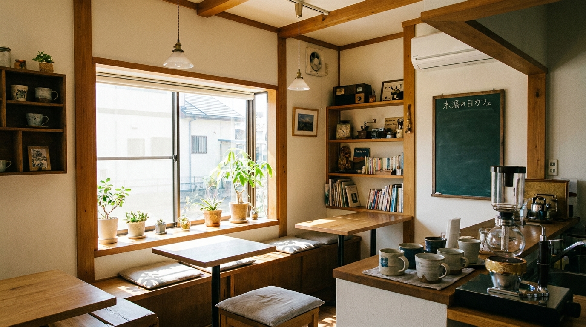

ASAHIKAWA COFFEE
自家焙煎の珈琲と、手づくりのスイーツ。まちなかの2階にある、隠れ家のような喫茶店です。

豆の個性を活かした自家焙煎。ハンドドリップで一杯ずつ丁寧に。
毎日店内で焼き上げるケーキと焼き菓子をご用意しています。
静かに読書や仕事ができる、居心地の良い店内です。
2階にある静かな空間で、ゆったりとした時間を過ごせます。
厳選した豆を自家焙煎。いつもと違う一杯に出会えます。
Wi-Fiや電源も完備。おひとり様での利用も安心です。
CONTACT
ご予約・お問い合わせはLINEからお気軽にどうぞ。